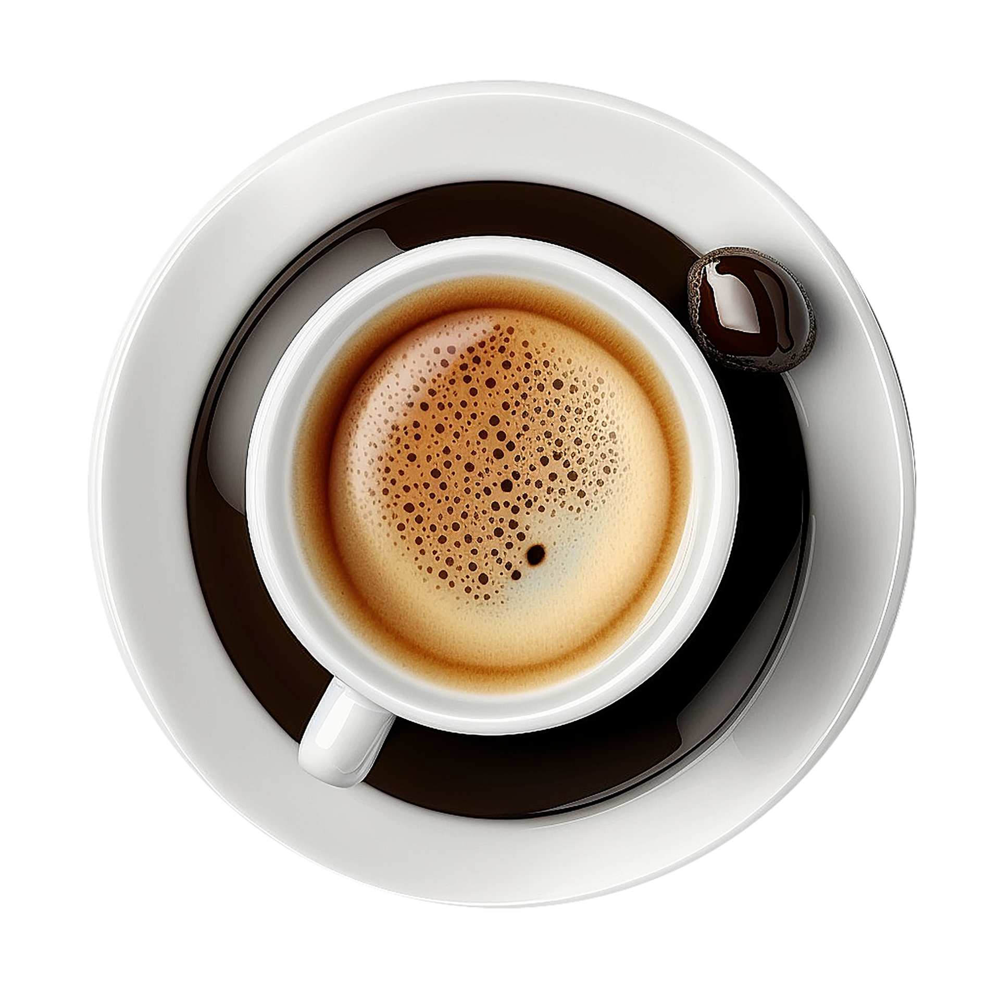
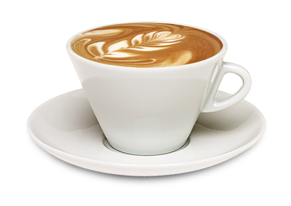
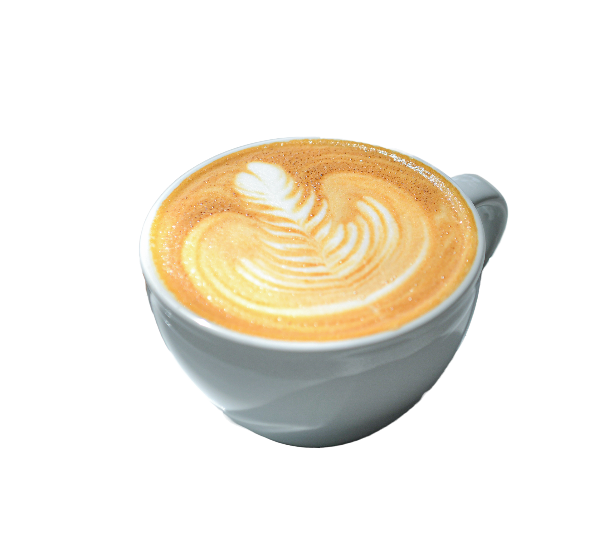

Espresso


Café forte e concentrado feito com uma pequena quantidade de água quente forçada através de uma quantidade controlada de café moído fino.
Cappuccino

Café em partes iguais de espresso, leite vaporizado e espuma de leite. Conhecido por sua textura cremosa e sabor equilibrado entre o café e o leite
Latte

Café suave feito com espresso e uma maior quantidade de leite vaporizado do que o cappuccino, utlizando imagens/figuras.
Macchiato

Café com uma pequena quantidade de espresso "manchado" com uma pequena quantidade de espuma de leite cremosa e consistente.